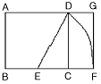
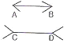
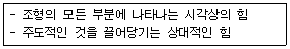
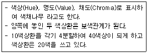
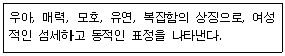
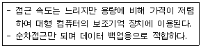
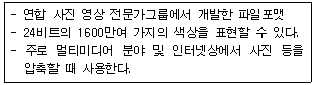
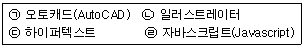

웹디자인기능사 (2012-10-20 기출문제)
1과목: 디자인 일반
1. 제품 디자인 과정 중 「완성 예상도」라고도 하며 실물처럼 충실하고 정확히 표현하는 것을 무엇이라고 하는가?
- 렌더링(RENDERING)
- 드로잉(DRAWING)
- 스케치(SKETCH)
- 모델링(MODELING)
(정답률: 77%)

2. 다음 중 주위색의 영향으로 오히려 인접색에 가깝게 느껴지는 현상을 의미하는 것은?
- 대비 현상
- 동화 현상
- 색의 수축성
- 중량 현상
(정답률: 92%)
3. 다음 중 무엇을 구하는 도형인가?

- 심메트리
- 황금분할
- 루트구형
- 아심메트리
(정답률: 91%)
4. 다음 중 실내 공간을 목적별로 분류한 대상이 아닌 것은?
- 생활 공간 (living space)
- 가구 공간 (furniture space)
- 공공 공간 (public space)
- 작업 공간 (work space)
(정답률: 76%)
5. 망막에 다른 색광이 혼합되는 현상으로 색 점이 서로 가깝게 있어 명도와 채도가 떨어지지 않는 혼합방식은?
- 보색혼합
- 병치혼합
- 가산혼합
- 감산혼합
(정답률: 71%)
6. 다음 그림에서 나타나는 착시현상은?

- 방향의 착시
- 대비의 착시
- 분할의 착시
- 길이의 착시
(정답률: 86%)
7. 기계화와 대량생산에 의한 생활 용품의 품질 저하에 반대하여 윌리엄 모리스를 중심으로 영국에서 일어난 것은?
- 산업혁명
- 아르 누보
- 미술공예운동
- 대규모생산운동
(정답률: 90%)
8. 다음 중 색의 주목성에 관한 설명으로 틀린 것은?
- 명시성이 높은 색은 주목성도 높아지게 된다.
- 주목성은 색이 우리의 시선을 끄는 힘을 말한다.
- 차가운 한색은 따뜻한 난색보다 주목성이 높다
- 명도와 채도가 높은 색은 주목성이 높다.
(정답률: 88%)
9. 1, 2, 4, 8, 16 ...과 같이 이웃하는 두 항의 비가 일정한 수열은?
- 등차수열
- 등비수열
- 피보나치수열
- 조화수열
(정답률: 88%)
10. 1931년 국제조명위원회에서 가산 혼합 원리로 물리적인 빛의 혼합을 기초로 하는 표색계는?
- CIE 표색계
- 오스트발트(OSTWALD) 표색계
- 맥스웰(MAXWELL) RGB 표색계
- 먼셀(MUNSELL) 표색계
(정답률: 67%)
11. 다음이 설명하고 있는 디자인 원리는?

- 주도와 종속
- 비례와 균형
- 리듬과 율동
- 유사와 대비
(정답률: 83%)
12. 다음이 설명하는 색입체 모형은?

- 오스트라발트 색입체
- 문 스펜서의 색입체
- 먼셀의 색입체
- 영 핼름훌쯔의 색입체
(정답률: 74%)
13. 다음 색체계열 중 피를 많이 보는 수술실과 같은 공간에 가장 알맞은 것은?
- 갈색계열
- 무채색계열
- 녹색계열
- 보라색계열
(정답률: 92%)
14. 면의 한계나 교차에서 생기는 것으로 직접 지각되지 못하는 것은?
- 네거티브 점
- 포지티브 점
- 포지티브 선
- 네거티브 선
(정답률: 71%)
15. 다음 설명과 같은 특성을 가지는 선(line)은?

- 직선
- 절선
- 점선
- 곡선
(정답률: 95%)
16. 다음 중 쓴맛을 나타내는 색은?
- 검정
- 주황
- 회색
- 파랑
(정답률: 68%)
17. 색의 활용 효과에 대한 설명으로 틀린 것은?
- 밝은 바탕에 어두운 색 글자보다 어두운 바탕에 밝은 색 글자가 더 굵고 커 보인다.
- 같은 크기의 검정색 상자와 흰색 상자를 비교하면 흰색 상자가 더 가볍게 느껴진다.
- 천장을 좀 더 높게 보이게 하려면 벽면과 동일계열의 고명도 색을 천장에 칠한다.
- 상의를 하의보다 더 어두운 색상으로 하면 키가 더 커 보인다.
(정답률: 79%)
18. 색과 색체에 대한 설명으로 옳은 것은?
- 색은 심리적 현상을 말한다.
- 색채는 물리적 현상을 말한다.
- 색은 무채색을 포함하지 않는다.
- 색채는 유채색을 말한다.
(정답률: 61%)
19. 생동감 있는 형태를 창조하여 시야가 형태와 구성 주변을 따라 움직이도록 하는 디자인 원리는?
- 대칭
- 비대칭
- 통일
- 비례
(정답률: 49%)
20. 디자인 의미에 대한 설명으로 옳지 않은 것은?
- 넓은 의미로 심적 계획(a mental plan)이다.
- 좁은 의미로는 보다 사용하기 쉽고 안전하며, 아름답고, 쾌적한 생활환경을 창조하는 조형행위이다.
- 사전적의미로 라틴어의 ‘designare'와 같이 ’지시하다, 계획을 세우다, 스케치를 하다‘ 등의 의미로 사용된다.
- 도안(圖案)또는 의장(意匠)을 말하며, 주어진 목적에 관계없이 비실체적인 행위의 총체이다.
(정답률: 84%)
2과목: 인터넷 일반
21. IPv6 주소체계에 대한 설명으로 가장 거리가 먼 것은?
- 64bit의 확장된 주소 공간을 제공한다.
- 라우터의 라우팅 테이블에 오버플로우 현상을 제거하여 라우팅 능력을 개선한다.
- IPSEG을 통하여 보안의 취약점을 찾아낼 수 있다.
- QoS(Quality of Service) 제어기능을 지원한다.
(정답률: 67%)
22. 상호작용을 지원하는 웹 페이지 제작을 위한 CGI의 설명으로 틀린 것은?
- 웹 브라우저와 웹서버, 응용프로그램 간의 일종의 인터페이스이다.
- 방명록이나 카운터, 게시판 등에 사용된다.
- 사용자에게 일방적인 정보제공을 하기 위해 사용된다.
- HTML의 <FORM>태그를 이용하여 CGI 프로그램으로 데이터를 전달한다.
(정답률: 66%)
23. 네트워크를 통해 데이터 통신을 실행하는데 사용되는 일련의 규칙을 무엇이라고 하는가?
- 호스트
- 서버
- 프로토콜
- 토폴로지
(정답률: 89%)
24. 다음 중 인터넷에서 사용하고 있는 통신 프로토콜은?
- TCP/IP
- DNS
- 100 Base
- cat 5
(정답률: 92%)
25. 인터넷의 기본 통신규약인 TCP/IP의 개발에 기초가 된 미국 국방성의 네트워크는?
- NSFNET
- ARPANET
- BITNET
- CSNET
(정답률: 83%)
26. 웹 브라우저(Web Browser)의 종류가 아닌 것은?
- Mosaic
- Opera
- Leno
- Safari
(정답률: 81%)
27. 웹 브라우저에 대한 설명으로 틀린 것은?
- 인터넷 웹서버에 저장된 하이퍼텍스트와 하이퍼미디어 정보를 불러와서 사용자의 컴퓨터 화면에 보여주는 역할을 하는 프로그램이다.
- 인터넷 익스플로러 5.0이상의 버전에서 쿠키 거부 기능을 추가하였다.
- HTML 이외의 형식의 정보를 다루기 위해 자체적으로 CGI 프로그램을 사용한다.
- 기본적으로 HTTP 프로토콜을 사용한 웹서비스를 제공하지만 FTP, Usenet, 전자우편 등의 서비스도 함께 제공한다.
(정답률: 53%)
28. 인터넷 정보검색 방법으로 적절하지 않은 것은?
- 단어별 검색엔진은 초보자가 사용하기에 용이하다.
- 검색하고자 하는 정보에 적합한 검색엔진을 선택한다.
- 검색엔진을 사용할 경우 정확한 검색어를 선정한다.
- 해당하는 검색엔진의 기능을 충분히 숙지한다.
(정답률: 60%)
29. 자바스크립트에 대한 설명으로 옳지 않은 것은?
- HTML 문서에 포함되어 실행되는 스크립트언어이다.
- 동적인 웹 페이지를 작성할 수 있도록 해준다.
- 모든 플랫폼에서 인터프리터에 의해 실행이 가능하다.
- 컴파일 과정을 통하여 스크립트를 직접 실행하는 인터프리터 언어이다.
(정답률: 55%)
30. 웹 문서에 mp3 사운드 파일을 삽입하여 재생되도록 하고자 할 때 사용되는 태그는?
- <IMG>
- <EMBED>
- <BK>
- <MP3>
(정답률: 64%)
31. 자바스크립트의 내장함수에 해당되지 않는 것은?
- fun define()
- eval()
- parselnt()
- escape()
(정답률: 65%)
32. 웹 페이지 제작 시 배경 색상 설정이 흰색으로 지정되지 않는 것은?
- <BODY bgcolor="#ffffff">
- <BODY bgcolor="white">
- <BODY bgcolor="ffffff">
- <BODY bgcolor="#000000">
(정답률: 72%)
33. 웹페이지를 만들기 위해 사용되는 프로그램 중 클라이언트 측에서 수행되는 것은?
- ASP
- JSP
- JavaScript
- PHP
(정답률: 75%)
34. 인터넷 사이트를 방문할 때 1024×768로 최적화되어 있는 사이트를 방문할 때가 있다. 이 사이트는 전체 화면이 한 눈에 들어오지 않아 스크롤바를 이용하거나 해상도를 높여 한 화면으로 볼 수 있도록 한다. 이때, 해상도를 바꾸지 않고 화면을 확대하는 단축키는?
- F8
- F9
- F10
- F11
(정답률: 79%)
35. 다음 중 미디어 데이터를 처리하고 재생함으로서 웹 브라우저의 기능을 확장시켜 주는 것은?
- 쿠키
- 플러그인
- 책갈피
- 다이어그램
(정답률: 81%)
36. 주제별 검색엔진으로 카테고리에 의한 체계적인 링크 정보를 제공하는 검색엔진은?
- 메타 검색엔진
- 디렉터리형 검색엔진
- 하이브리드형 검색엔진
- 에이전트 검색엔진
(정답률: 67%)
37. HTML 문서의 입력 양식 필드에서 값이 바뀌었을 때 처리해주는 자바스크립트의 이벤트 함수는?
- OnChange()
- OnClick()
- OnLoad()
- OnSelect()
(정답률: 77%)
38. HTML 태그의 설명으로 틀린 것은?
- <I> … </I> : 이탤릭체를 보여준다.
- <OL> … </OL> : 순서를 매기지 않은 목록을 작성할 때 사용한다.
- <CENTER> … </CENTER> : 태그사이에 있는 문단을 가운데로 정렬한다.
- <BR> : 줄을 바꿀 때에 사용한다.
(정답률: 69%)
39. OSI 7계층 중 직접 연결된 시스템간의 오류 없는 데이터 전송을 담당하며 네트워크 계층에 서비스를 제공해 주는 역할을 하는 것은?
- 물리 계층
- 데이터 링크 계층
- 전송 계층
- 응용 계층
(정답률: 45%)
40. HTML 문서의 구조에 대한 설명이 올바르지 않은 것은?
- 태그라 불리는 코드들로 구성된다.
- 메모장과 같은 일반적인 에디터나 워드프로세서를 통하여 작성한다.
- HTML을 이용하여 제작한 문서의 확장자는 *.htm 또는 *.http 이다.
- <HTML>로 시작해서 </HTML>로 종료한다.
(정답률: 75%)
3과목: 웹그래픽스 디자인
41. 2차원 이미지를 3차원 이미지로 대응시키는 텍스처 매핑(Texture Mapping)이 개발된 년도는?
- 1971년
- 1974년
- 1976년
- 1979년
(정답률: 49%)
42. 오려낸 그림을 2차원 평면상에서 한 프레임씩 움직이면서 촬영하는 스톱 애니메이션을 말한다. 클레이 애니메이션이나 인형 애니메이션과 비슷하지만 3차원이 아닌 2차원이라는 점에서 구분되는 애니메이션은?
- 셀 애니메이션
- 종이 애니메이션
- 모래 애니메이션
- 컷 아웃 애니메이션
(정답률: 69%)
43. 디지털 이미지를 구성하는 최소 단위를 일컫는 용어는?
- 픽셀(Pixel)
- 디스플레이(Display)
- 비트맵(Bitmap)
- 오브젝트(Object)
(정답률: 92%)
44. 컴퓨터의 그래픽 이미지의 보정 및 수정의 과정으로 거리가 먼 것은?
- 크로핑(Cropping)을 한다.
- 노이즈(Noise)를 삭제한다.
- 컬러(Color)를 조절한다.
- 윤곽선(Outline)을 흐리게 한다.
(정답률: 57%)
45. 이미지를 선분의 집합이 아니라 픽셀들의 배열 형태로 처리하는 방식은?
- 랜덤 그래픽스
- 벡터 그래픽스
- 레스터 그래픽스
- 픽셀 그래픽스
(정답률: 52%)
46. 움직임이 없는 무생물적인 존재를 여러 번에 걸쳐 변형을 시키고 이를 연속 촬영 또는 기타 영상적 기법을 이용하여 마치 움직이는 것처럼 눈의 착각을 일으키도록 하는 기술은?
- 렌더링
- 모델링
- 크로마키
- 애니메이션
(정답률: 88%)
47. 웹 그래픽 디자인 제작기법에서 이미지를 표현하는 단계를 순서적으로 옳게 나열한 것은?
- 이미지 구성 → 도구 선택 → 색상 선택 → 이미지 표현
- 이미지 구성 → 이미지 표현 → 색상 선택 → 도구 선택
- 이미지 구성 → 이미지 표현 → 도구 선택 → 색상 선택
- 이미지 구성 → 색상 선택 → 이미지 표현 → 도구 선택
(정답률: 79%)
48. 다음 설명에 알맞은 보조기억 장치는?

- 자기 테이프
- 자기 디스크
- 플로피 디스크
- 광 디스크
(정답률: 44%)
49. 웹디자인 프로세스 Pre-Production 중 단계에 해당되지 않는 것은?
- 디자인 계획 수립
- 동영상 제작
- 콘셉트 구상
- 디자인 구체화
(정답률: 78%)
50. 3차원 그래픽 과정 중 매핑의 정의로 올바른 것은?
- 실제사진과 그려진 애니메이션을 결합시키는 것이다.
- 3차원의 입체물을 제작하고 공간속에 이를 배치하는 것이다.
- 모델링된 각 물체의 표면에 고유한 재질감을 부여하는 것이다.
- 광원과 카메라의 속성을 부여하여 이를 사실적인 이미지로 묘사하는 것이다.
(정답률: 64%)
51. 다음이 설명하고 있는 그래픽 파일 포맷은?

- GIF
- PNG
- JPEG
- BMP
(정답률: 65%)
52. 다음 소프트웨어 중 2D 평면 디자인을 할 때 사용하는 소프트웨어로만 나열된 것은?

- (ㄱ), (ㄴ)
- (ㄷ), (ㄹ)
- (ㄱ), (ㄹ)
- (ㄴ), (ㄹ)
(정답률: 75%)
53. 웹상에서 사용되는 파일 포맷 중 GIF와 JPEG의 장점을 합친 형태로 GIF와는 달리 투명도 자체를 조절할 수 있는 특징을 가진 것은?
- AI
- PNG
- PSD
(정답률: 84%)
54. 사용할 수 있는 색상의 수가 제한될 경우에 주로 사용하며 작은 수의 색상으로 눈의 착시현상을 이용하여 여러 색을 사용한 듯한 효과를 얻을 수 있는 방법은?
- Modeling
- Rotating
- DIthering
- REsolution
(정답률: 79%)
55. 웹디자인 기획 시 고려해야할 사항과 가장 거리가 먼 것은?
- 사이트의 목적과 필요성을 충분히 인식하였는가?
- 유사, 경쟁 사이트의 디자인 분석은 완료하였는가?
- 통일성 확보를 위한 컬러, 톤, 폰트, 레이아웃의 원칙들은 수립되었는가?
- 일련의 과정들에 대한 문서들의 보관 및 데이터 백업은 완료하였는가?
(정답률: 72%)
56. 웹 인터페이스 디자인에서 강조되는 특성이 아닌 것은?
- 사용자 편의성
- 일관성
- 독창성
- 강제성
(정답률: 87%)
57. 웹 그래픽 제작에서 백그라운드 이미지 삽입에 관한 설명으로 가장 거리가 먼 것은?
- 줄무늬를 배경 이미지로 제작
- 도형을 이용한 패턴 제작
- 부드러운 그라데이션 제작
- 동영상을 배경 이미지로 제작
(정답률: 84%)
58. 애니메이션 기법 중 두 개의 서로 다른 이미지나 3차원 모델 사이의 변화하는 과정을 서서히 나타내는 것은?
- 모핑
- 로토스코핑
- 미립자시스템
- 중첩 액션
(정답률: 68%)
59. 물체 경계면의 픽셀을 물체의 색상과 배경의 색상을 혼합해서 표현하여 경계면이 부드럽게 보이도록 하는 기법은?
- Antialiasing
- Dithering
- Telecine
- Compositing
(정답률: 80%)
60. 디자인 구체화 단계에서 구상되어진 디자인을 구현하기 위해서 사용되는 프로그램과 그 역할이 잘못 설명된 것은?
- 드림위버 : HTML 코딩할 때 사용
- 포토샵 : 이미지의 변형 및 아이콘 제작에 사용
- 플래시 : 동영상 및 사운드 편집에만 사용
- 케이크워크 : 사운드 편집 및 변환에 사용
(정답률: 65%)